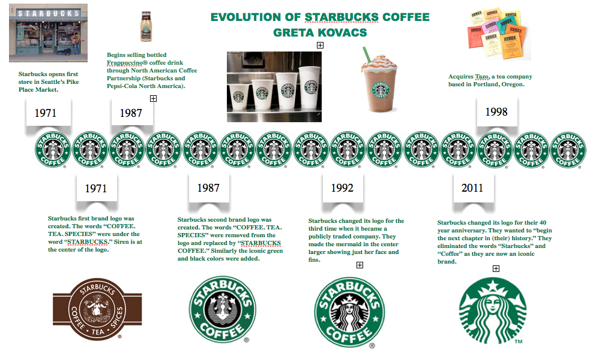

History Starbucks
Starbucks

Starbucks Corporation is an international coffee and coffee house chain based in Seattle, Washington, United States. It opened as a single small store opened in 1971 and became a coffee giant at the end of the millennium. Starbucks has led a coffee revolution in the United States and beyond. The store was opened by 3 men: Jerry Baldwin, Zev Siegl and Gordon Browker. Starbucks for first nine months bought coffee from Peet’s Coffee. Within first decade Starbucks opened five stores.
1971 — Jerry Baldwin, Zev Siegl and Gordon Bowker opened Starbucks, the first store in Seattle’s Pike Place Market. The goal of the shop was to sell fresh roasted coffee beans and brewing and roasting accessories to customers from that region. At the beginning, it was a real success.
1982 — Howard Schultz had joined the group, as director of marketing and retail operations. Before that, he was just a plastic salesperson, who was providing to the Starbucks plastic drip-brewing thermoses. Starbucks began to provide coffee to the espresso bars and top restaurants.
1984 — Howard Scultz convinced the founders of Starbucks to try the coffeehouse concept that he saw in Milan in downtown of Seattle. There, for the first time, a Starbucks ® Caffè Latte has been served. That successful experience was the genesis for a new company that Schultz founded in 1985.
1985 — Howard Scultz opened “The Daily”/”Il Giornale”. He tried to recreate his experience, offering to people espresso beverages and brewed coffee on an Italian coffeehouse atmosphere. Everything was made from Starbucks ® coffee beans.
1987 -“Il Giornale” acquired the Starbucks assets for $3.7 million with some help from local investors. The name was changed with Starbucks Corporation. There were opened new stores in Chicago and Vancouver, Canada. Numbers of stores: 17.
1988 — There, were offered full health benefits to all eligible full-time employees. Number of stores: 33 1989 — Number of stores: 55. 1990 — Starbucks expanded its headquarters in Seattle. Number of stores: 84.
1991 — Starbucks become the first U.S. Company that offered a stock option program that included also the part-time employees. In the same time was opened the first licensed airport store at Seattle’s International Airport. Number of stores: 116. 1992 — It was completed the initial public offering (IPO), that produced more cash for the company and caused the growing of Starbucks in the coffee industry. The common stock was traded on the NASDAQ National Market under the symbol SBUX. Numbers of stores: 165. 1993 — It was opened a roasting plant in Kent, Wash and it was announced the first two-for-one stock split. Numbers of stores: 272. 1994 — It was opened the first drive thru location. Number of stores: 425.
1995 — It began to serve and introduce new types of products (Frappuccino ® and Starbucks ® super premium ice cream). Also, it was announced the second two-for-one stock split and it was opened a new roasting facility in York, Pa. Number of stores: 677. 1996 — Starbucks had the first selling bottled Frappuccino ® in partnership with Pepsi-Cola (only in North America). There were opened stores in: Japan (the first store outside of North America) and Singapore. Number of stores: 1,015. 1997 — It was established the Starbucks Foundation. Number of stores: 1,412.
1998 — The Starbucks brand extended into the grocery channels across all over the U.S. Starbucks.com was launched and another stores appeared. Number of stores: 1,886. 1999 — Acquisition of Tazo Tea and partnership with Conservation International to promote lasting coffee growing practices. It is acquired, also, Hear Music and it is announced the third two-for-one stock split. Number of stores: 2,498. 2000 — Howard Schultz stepped aside from the chairman position to became the chief global strategist and Orin Smith was promoted chief executive officer (CEO). The company established a licensing agreement with TransFair USA to sell Fair-trade certified coffee in U.S. and Canada. Number of stores: 3,501.
1998 — The Starbucks brand extended into the grocery channels across all over the U.S. Starbucks.com was launched and another stores appeared. Number of stores: 1,886. 1999 — Acquisition of Tazo Tea and partnership with Conservation International to promote lasting coffee growing practices. It is acquired, also, Hear Music and it is announced the third two-for-one stock split. Number of stores: 2,498. 2000 — Howard Schultz stepped aside from the chairman position to became the chief global strategist and Orin Smith was promoted chief executive officer (CEO). The company established a licensing agreement with TransFair USA to sell Fair-trade certified coffee in U.S. and Canada. Number of stores: 3,501.
2004 — It was open the first Farmer Support Center in San Jose, Costa Rica. In the same year it is also introduced the Starbucks Coffee Master Program. Number of stores: 8,569. 2005 — Jim Donald takes Orin Smith place and becomes president and chief executive officer. Also, in this year is bought Ethos Water and it is announced the fifth two-for-one stock split. Number of stores: 10,241. 2006 — It is launched the first paper beverage cup, that contained post consumer recycled fiber. Number of stores: 12,440.
2007 — Number of stores: 15,011. 2008 — Howard Schultz comes back as chief executive officer and he decides to acquire Coffee Equipment Company and its Clover ® brewing system. In additionally, it is launched My Starbucks Idea, the first online community where everyone can shares his ideas and it is brought on market the Pike Place RoastTM, which becomes very soon Starbucks top selling coffee. Number of stores: 16,680. 2009 — It is opened East Africa Farmer Support Center in Kigali, Rwanda. Personal note: it can be observe that because of the economic crisis there is a small difference in the number of shops between the years 2008-2009. Instead of raising their number like in the others years, surprisingly the number of stores decreased. In the next years, it also can be observe that the raisings are not so big like in the past. Number of stores: 16,635.
2010 — Starbucks expands the digital offerings, giving to the customers, free unlimited Wi-Fi, Starbucks Digital Network. It also reinvents its business strategy to extend brand’s reach, offering ultra premium Starbucks Reserve line and Starbucks ® Natural Fusions. Number of stores: 16,858. 2011 — Happy 40th anniversary for Starbucks, meaning it is updated the brand identity and the month of global community service. For creating diversity it is acquired Evolution Fresh. (In my opinion that it is not the best idea they could have.) Number of stores: 17,003. 2012 — Starbucks ® Blonde Roast is implementing. More than that, Farmer Support Center it is open in Manizales, Colombia and it is acquired La Boulange ® bakery brand, diversifying their offer. Number of stores: 17,651 (as of July 1, 2012).
In the early 21st century, Starbucks was working to achieve Schultz’s ambitious goals of 500 stores in both Japan and Europe by 2003, as well as his ultimate goal of 20,000 units worldwide. In June 2000 he stepped down as CEO of the company to become its chief global strategist, while remaining chairman. In the early 21st century, Starbucks was working to achieve Schultz’s ambitious goals of 500 stores in both Japan and Europe by 2003, as well as his ultimate goal of 20,000 units worldwide.